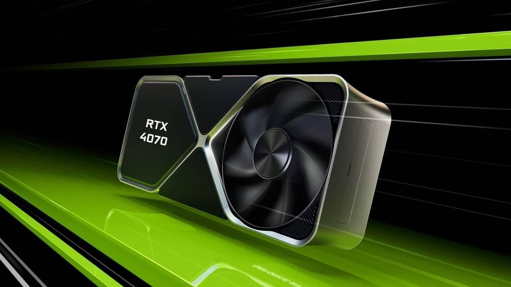

NVIDIA GeForce RTX 4070
A NVIDIA apresentou, nesta quarta-feira (12), a nova placa de vídeo da empresa, GeForce RTX 4070. O modelo faz parte do segmento intermediário premium para games com a arquitetura Ada Lovelace, a mais recente da companhia, fabricada em 5 nm. A placa estará disponível para compra a partir de amanhã, 13 de abril.
A NVIDIA GeForce RTX 4070 conta com uma GPU AD104, com Tensor Cores de 4a geração e 5.888 núcleos CUDA. Segundo as especificações oficiais, a placa terá uma frequência base de atuação de 1920 MHz e clock turbo de 2475 MHz. No quesito memória, a nova placa possui 12 GB de memória GDDR6X e 36 MB L2.
Já na área de gasto de energia, a NVIDIA calcula que o gasto médio da RTX 4070 em games será de 186 W e o TGP será de 200 W.
Entre as funções disponíveis no novo modelo, a GeForce RTX 4070 também se aproveita do DLSS 3, que melhora consideravelmente o desempenho das placas em games, inclusive se comparado com versões anteriores da tecnologia. Além disso, a GPU conta com encoders AV1 e H.264.
Preço, disponibilidade e comparativos com outras gerações passadas
A NVIDIA lançou a NVIDIA GeForce RTX 4070 dia 13 de abril de 2023, o modelo já estará disponível para compra nas lojas, inclusive em território nacional. O preço sugerido no lançamento é de R$ 4.999,00.
O modelo chega ao mercado estrangeiro por US$ 599, mesmo valor pela qual a NVIDIA RTX 3070 Ti foi lançada, mas o modelo atual conta com especificações bastante superiores, o que a companhia classifica como um salto grande entre gerações.